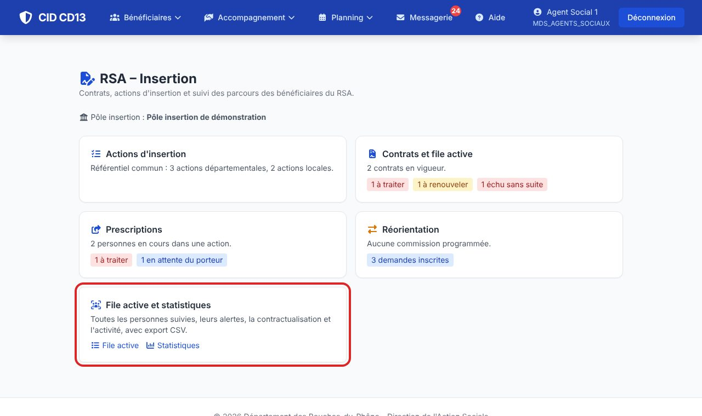
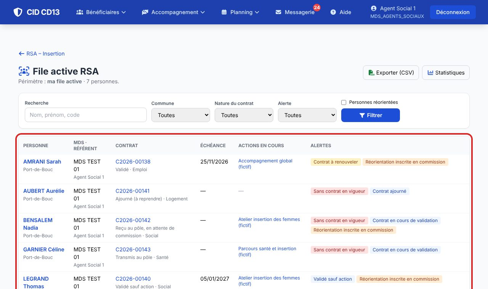
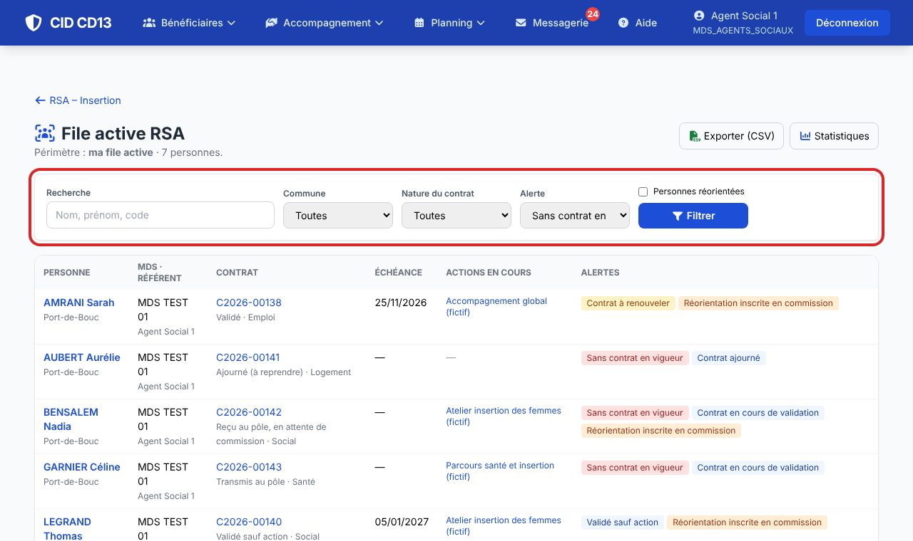
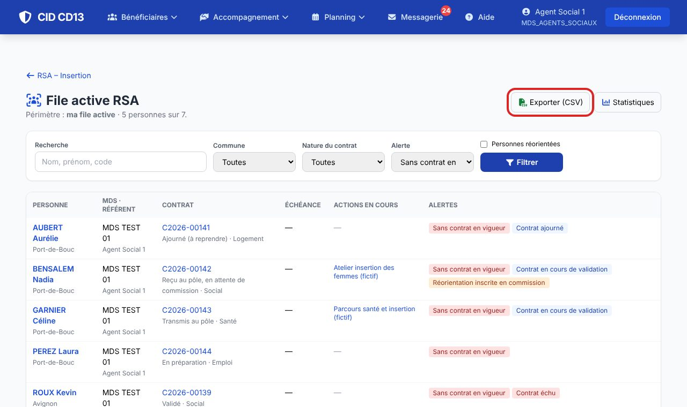

1Ouvrir la file active


- Chacun voit son périmètre : le référent sa file active, le cadre sa MDS, le pôle les MDS de son pôle.
- Pour chaque personne : le contrat (en vigueur, sinon le dernier), son échéance, les actions en cours et les alertes (sans contrat en vigueur, à renouveler, échu, validé sauf action, en cours de validation, ajourné, réorientation inscrite).
2Filtrer

- Par nom, MDS, référent, commune, nature du contrat ou alerte. « Personnes réorientées » montre celles qui ont quitté la file active (France Travail, CAF, association).
3Exporter

- Exporter (CSV) reprend la liste filtrée. Le fichier (séparateur « ; », UTF-8) s'ouvre dans LibreOffice, Excel ou tout autre outil.
Bon à savoir
- La file active ne demande aucune saisie : elle vient des contrats, des prescriptions et des réorientations.
- Les agents du pôle voient le contrat, pas le reste du dossier social.
Et ensuite ?
Cliquez sur une image pour l'agrandir. Le cadre rouge montre où cliquer ou quoi remplir. Toutes les données affichées sont fictives.